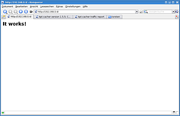

apt-cacher
Dieser Artikel wurde für die folgenden Ubuntu-Versionen getestet:
Dieser Artikel ist mit keiner aktuell unterstützten Ubuntu-Version getestet! Bitte diesen Artikel testen und das getestet-Tag entsprechend anpassen.
Zum Verständnis dieses Artikels sind folgende Seiten hilfreich:
apt-cacher  ist ein Programm, welches die Belastung der Internetanbindung durch Updates verringert, sobald zwei oder mehr Debian-basierte (also auch Ubuntu und Derivate) Rechner über diesen Zwischenspeicher (Cache) auf die gleichen Paketquellen zugreifen. So werden Debian-Pakete, die auf beiden (allen) Rechnern benötigt werden, nur einmal aus dem Internet heruntergeladen.
ist ein Programm, welches die Belastung der Internetanbindung durch Updates verringert, sobald zwei oder mehr Debian-basierte (also auch Ubuntu und Derivate) Rechner über diesen Zwischenspeicher (Cache) auf die gleichen Paketquellen zugreifen. So werden Debian-Pakete, die auf beiden (allen) Rechnern benötigt werden, nur einmal aus dem Internet heruntergeladen.
Das Programm verwendet einen Webserver Apache um den Clients den Cache über HTTP bereit zu stellen. Jedoch wird kein Spiegelserver (wie bei apt-mirror) erzeugt, sondern nur die bereits durch andere Systeme angeforderten Pakete bereitgestellt.
Mittlerweile gibt es eine Neuimplementierung von apt-cacher namens Apt-Cacher-ng. Diese kommt ohne Webserver aus. Weitere Programme mit ähnlichen Funktionen sind im Artikel Lokale Paketquellen zu finden.
Voraussetzungen¶
Die Installation setzt einen funktionierenden Apache-Server (wird nicht automatisch mit installiert) voraus.
Installation von apt-cacher auf dem Server¶
Zu installierende Pakete [1]:
apt-cacher (universe)
 mit apturl
mit apturl
Paketliste zum Kopieren:
sudo apt-get install apt-cacher
sudo aptitude install apt-cacher

Um die Funktionstüchtigkeit des Apache-Webservers sicher zu stellen, sollte an dieser Stelle die Adresse http://localhost/ in einem beliebigem Browser aufgerufen werden (bei einem Server ohne Browser kann von einem anderem Rechner einfach die IP des Servers aufgerufen werden). Das Ergebnis sollte wie nebenstehend aussehen.
Konfiguration des Servers¶
Zur Konfiguration des Servers müssen lediglich zwei Dateien bearbeitet werden:
/etc/apt-cacher/apt-cacher.conf¶
Dies ist die "Haupt-Konfigurationsdatei" von apt-cacher. Sie ist gut dokumentiert (auf Englisch).
cache_dir=/var/cache/apt-cacher
gibt das Verzeichnis für den Cache an. Wenn es nicht existiert, wird es beim nächsten Start von apt-cacher angelegt.
admin_email=root@localhost
hiermit kann eine E-Mail-Adresse für den "Verkehrsbericht" und die Status-Seite definiert werden.
daemon_port=3142
legt den Port fest, über den apt-cacher von Apt erreichbar ist (wichtig für die Client-Konfiguration).
group=www-data user=www-data
legt Benutzernamen und -Gruppe fest, unter dessen Namen apt-cacher ausgeführt wird.
allowed_hosts=192.168.0.0/24 denied_hosts=
legt die Netzwerkadressen (IPv4) fest, denen die Nutzung des Caches erlaubt bzw. verboten ist. Angaben können einzelne IPs sein, eine IP mit Maske (wie im Beispiel), oder IP-Ranges (192.168.0.1-192.168.0.254 bedeutet das gleiche wie 192.168.0.0/24).
allowed_hosts_6=fec0::/16 denied_hosts_6=
legt die Netzwerkadressen (IPv6) fest, denen die Nutzung des Caches erlaubt bzw. verboten ist. Irrelevant, da IPv6 praktisch nicht genutzt wird, nur der Vollständigkeit halber erwähnt.
allowed_locations=de.archive.ubuntu.com, archive.canonical.com
URLs von denen Updates und Paketlisten geladen werden dürfen. Für den Hausgebrauch auskommentieren (d.h. alle Quellen, die ein Client haben möchte, werden geladen). In diesem Beispiel wären nur die Quellen de.archive.ubuntu.com und archive.canonical.com erlaubt.
generate_reports=1
legt fest, ob Nutzungsreporte erstellt werden. Üblicherweise nicht erforderlich, es sei denn man möchte sehen, was man seiner Internetanbindung erspart hat.
clean_cache=1
legt fest, ob apt-cacher aufräumt, d.h. Pakete aus dem Cache entfernt, wenn diese nicht mehr in den aktuellen Paketlisten auftauchen.
offline_mode=0
im Offline-Modus werden keine Dateien aus dem Internet geladen, sondern lediglich bereits vorhandene Dateien verteilt.
logdir=/var/log/apt-cacher
legt das Verzeichnis für Logfiles fest.
expire_hours=0
legt fest, wann (nach wie vielen Stunden) Paketlisten bei einem Update erneuert werden sollen. Bei dem Wert 0 wird der Header verglichen und dann entschieden, ob die Paketliste erneuert werden muss.
http_proxy=proxy.example.com:8080 use_proxy=0 http_proxy_auth=proxyuser:proxypass use_proxy_auth=0
legt Proxyeinstellungen fest, falls man einen Proxyserver/Firewallsystem nutzt.
limit=0
Beschränkung der Downloadrate in Bits/s. "0" bedeutet keine Beschränkung, k und m können verwendet werden um Angaben in Kilobit/s bzw. Megabit/s zu machen.
debug=1
fügt Debug-Informationen zum Errorlog hinzu (Pfad siehe logdir).
checksum=1
legt fest, ob Checksummen verwendet werden (benötigt zusätzlich das Paket libdbd-sqlite3-perl!)
path_map = ubuntu-ger de.archive.ubuntu.com/ubuntu ; ubuntu archive.ubuntu.com/ubuntu; ubuntu-updates archive.ubuntu.com/ubuntu ; ubuntu-security security.ubuntu.com/ubuntu
legt symbolische Namen fest. Diese können in der sources.list verwendet werden.
Z.B. wäre jetzt:
ubuntu-ger de.archive.ubuntu.com
deb http://SERVER:PORT/apt-cacher/ubuntu-ger hardy universe
das gleiche wie:
deb http://de.archive.ubuntu.com/ubuntu/ hardy universe
Für SERVER wird die IP oder der Name (bei funktionierendem DNS) des Servers eingetragen (localhost, wenn auf dem gleichem System apt-cacher läuft). Für PORT wird der weiter oben spezifizierte Port eingetragen (Standard: 3142).
/etc/default/apt-cacher¶
In dieser Datei wird lediglich festgelegt, ob apt-cacher beim Systemstart mit gestartet wird (Normalfall). In besonderen Fällen können hier auch der in der apt-cacher.conf definierte Port oder das "limit" (siehe oben) verändert werden.
Natürlich sollte auch der Server (also der Rechner, der den Cache bereitstellt) apt-Cacher nutzen, daher wird empfohlen, die Client-Konfiguration ebenfalls auf dem Server durchzuführen.
Um die neue Konfiguration zu übernehmen sollte jetzt folgender Befehl ausgeführt werden:
sudo /etc/init.d/apt-cacher restart
Über einen Webbrowser ist jetzt auch die Seite http://localhost/apt-cacher/ (bzw. von einem anderem Rechner http://SERVER-IP/apt-cacher/ ) erreichbar.
Konfiguration der Clients¶
Für die Konfiguration der Clients (zugreifende Rechner) sind vier Möglichkeiten bekannt. Es müssen jeweils anschließend die Paketlisten erneuert werden (gilt nicht für die Einrichtung über Proxy) [4].
sources.list bearbeiten¶
Man ändert die Einträge in der sources.list[5] wie folgt ab:
Man schreibt zwischen "http://" und der darauf folgenden Adresse SERVER:PORT. SERVER kann die IP des Hosts von apt-cacher, ein Rechner-Name (bei funktionierender Namensauflösung im LAN -> DNS), oder (wenn der Server auf dem gleichem Rechner läuft) localhost (bzw. 127.0.0.1). Für PORT trägt man den Port der Anwendung auf dem Host ein (Standard: apt-cacher: 3142).
Beispiel¶
Aus:
deb http://de.archive.ubuntu.com/ubuntu/ hardy universe
wird (Annahme: apt-cacher läuft auf dem Rechner mit der IP: 192.168.0.4 mit dem Port:3142):
deb http://192.168.0.4:3142/de.archive.ubuntu.com/ubuntu/ hardy universe
bzw. wenn der symbolische Name (ubuntu_de de.archive.ubuntu.com/ubuntu/) verwendet wird (siehe Symbolische Namen):
deb http://192.168.0.4:3142/ubuntu_de/ubuntu hardy universe
Apt für Nutzung eines Proxys konfigurieren¶
Der schnellste Weg, die Clients für die Nutzung eines Caches/Proxies zu konfigurieren ist einen Proxy für apt festzulegen. Dazu muss in der Datei /etc/apt/apt.conf.d/01proxy (Dateiname ist ein Beispiel, Datei muss ggf. angelegt werden) Folgendes eingetragen werden:
Acquire::http { Proxy "http://SERVER:PORT"; };SERVER kann die IP des Hosts von apt-cacher sein, ein Rechner-Name (bei funktionierender Namensauflösung im LAN -> DNS), oder (wenn der Server auf dem selben Rechner läuft) localhost (bzw. 127.0.0.1). Für PORT trägt man den Port der Anwendung auf dem Host ein (Standard: apt-cacher 3142). Es können zusätzlich symbolische Namen in der sources.list [2] verwendet werden.
Konfiguration über GUI¶
An dieser Stelle wird auf die Wikiseiten zu den verschiedenen Paketmanagern verwiesen (Synaptic, Softwareverwaltung KDE,...). Grundsätzlich sind die selben Operationen wie beim manuellen Bearbeiten der sources.list möglich.
Einrichtung über Proxy¶
Wer in seinem Netzwerk einen Proxyserver (z.b. Squid) betreibt, kann die Einrichtung elegant über einen "Redirect" erledigen. Hierzu werden die entsprechenden URLs (z.B. http://de.archive.ubuntu.com) gefiltert und an den Server umgeleitet.
Diese Art der Konfiguration ist vor allem für Laptops, die in verschiedenen (W-)LANs eingesetzt werden, von Vorteil und erspart in großen Netzwerken (> 20 Teilnehmer) Konfigurationsaufwand.
Eine Konfiguration auf den einzelnen Clients ist nicht erforderlich.
Siehe hierzu: Squid-Handbuch  -> 6.2 Routing-Optionen zu anderen Proxys -> cache_peer_domain
-> 6.2 Routing-Optionen zu anderen Proxys -> cache_peer_domain
Bei jedem Update der Paketlisten oder von Paketen werden diese nun in dem Cache abgelegt. Wie effektiv apt-cacher arbeitet, kann man auf der Seite http://localhost/apt-cacher/reports ersehen (sofern Reports aktiviert wurde, von anderen Rechnern localhost durch die IP/den Namen des Servers ersetzen).
Weitere Aktionen mit apt-cacher¶
Cache des lokalen Systems importieren¶
Es ist möglich, den bisherigen Vorrat an .deb-Paketen in apt-cacher zu übernehmen. Dazu wird der folgende Befehl verwendet:
sudo /usr/share/apt-cacher/apt-cacher-import.pl /var/cache/apt/archives
Es wird ein Skript ausgeführt, das die Pakete aus /var/cache/apt/archives in das, in der apt-cacher.conf angegebene (Cache-)Verzeichnis kopiert. Dabei werden die Quelldateien gelöscht. Möchte man die Pakete nur kopieren, ruft man apt-cacher-import.pl mit der Option -r auf, möchte man nur symbolische Links erstellen, mit der Option -s. Die beiden Befehle wären dann also:
sudo /usr/share/apt-cacher/apt-cacher-import.pl -r /var/cache/apt/archives sudo /usr/share/apt-cacher/apt-cacher-import.pl -s /var/cache/apt/archives
Probleme mit dem Webinterface¶
apt-cacher bietet eine Webseite an, auf der die Konfigurationen und die Anzahl an übertragenen Paketen angeschaut werden kann. Einerseits kann man diese Seite über den eingetragen Port erreichen, standardmäßig ist das also http://<server>:3142 bzw. http://<server>:3142/report Zusätzlich trägt sich apt-cacher aber auch in den apache2 ein, so dass man diese Seite auch über http://<server>/apt-cacher bzw. http://<server>/apt-cacher/report abrufen kann. Dazu wird eine symbolische Verknüpfung in /etc/apache2/conf.d auf die Datei /etc/apt-cacher/apache.conf angelegt.
Unter Umständen kann es zu Problemen mit dem CGI-Aufruf kommen. In der /var/log/apache2/error.log steht dann so etwas wie
[error] [client <IP>] Options ExecCGI is off in this directory: /usr/share/apt-cacher/apt-cacher.pl
Abhilfe schafft es, wenn man die Datei /etc/apache2/conf.d/apt-cacher.conf editiert und so abändert:
Alias /apt-cacher /usr/share/apt-cacher/apt-cacher.pl
#<DirectoryMatch /usr/share/apt-cacher/> #vorher
<Location /apt-cacher> #Änderung!
Options ExecCGI
AddHandler cgi-script pl
AllowOverride None
order allow,deny
allow from all
</Location> #Änderung!
#</DirectoryMatch> #vorherZusätzlich muss man diesen Eintrag nun noch in den VirtualHost einbinden. Dazu öffnet man seine VirtualHost-Datei, standardmäßig /etc/apache2/sites-available/default und fügt die Zeile
Include /etc/apache2/conf.d/apt-cacher.conf
ein. Alternativ kann man auch den Text aus dieser Datei direkt in den VirtualHost kopieren.
Links¶
HowTo
auf debuntu.org Pakete auf debian.org
Blog-Anleitung
zur NutzungLokale Paketquellen
 Übersichtsartikel
Übersichtsartikel
- Erstellt mit Inyoka
-
 2004 – 2017 ubuntuusers.de • Einige Rechte vorbehalten
2004 – 2017 ubuntuusers.de • Einige Rechte vorbehalten
Lizenz • Kontakt • Datenschutz • Impressum • Serverstatus -
Serverhousing gespendet von